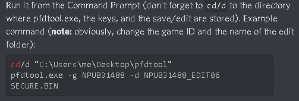
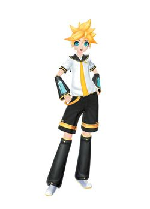

Hello! This website is dedicated to preserving all custom charts from Project Diva F/F2nd before servers are shut down. This is quite an ambitious project and won't be complete for a while. For now I only have a handful of F2nd charts, only available with a japenese copy of the game.
There are two types of charts. Encrypted and decrypted. Encrypted works for real hardware, decrypted works for an emulator (RPCS3). If you have selected an encrypted song pack and want to play on an emulator, refer to the tutorial down below. As for the charts, they have a special way of loading. They each take up a slot on the custom chart list, so you MUST download one of the packs and you cannot add your own charts unless you have expierience with this. So before importing any songs, read the song list and decide which pack you want.
Song Pack 1 (Encrypted)(Project Diva F2nd)(About 80 Songs)
Song List
US
JP
EU
If you have chosen a decrypted song pack, skip this step. If not please download pfdtool.exe with the link here (decryption key: nBGNBtWJYOuFkVtrbBiof8S6tYiH2BMQnjUehpnR60s) Now once that has been downloaded follow the steps below:
 Once you have your decrypted songs, you must put the songs from the Music folder into RPCS3\dev_hdd0\music on your pc. If that folder does not exist just make it. Then put all of the individual song folders in the folder named RPCS3\dev_hdd0\home\00000001\savedata. After these steps the charts should appear on your edit menu!
For original hardware you must download an encrypted song pack. Next, get a USB drive and put all of the songs into PS3/SAVEDATA (If its not there, make the folders yourself) Next drag and drop the "music" folder from the song pack you downloaded onto the root of the USB drive. Then plug in your USB drive and everything should work!
